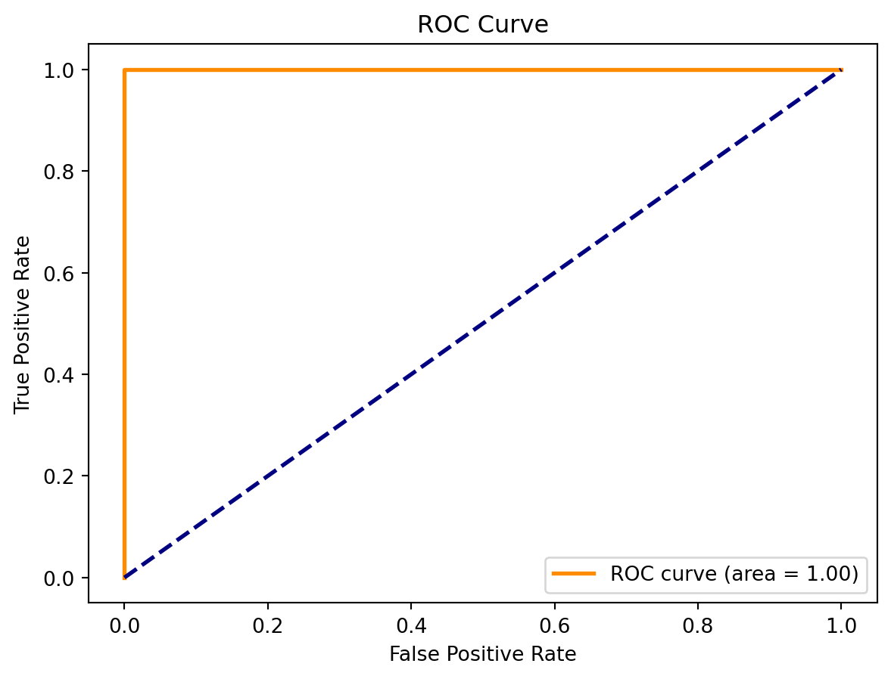
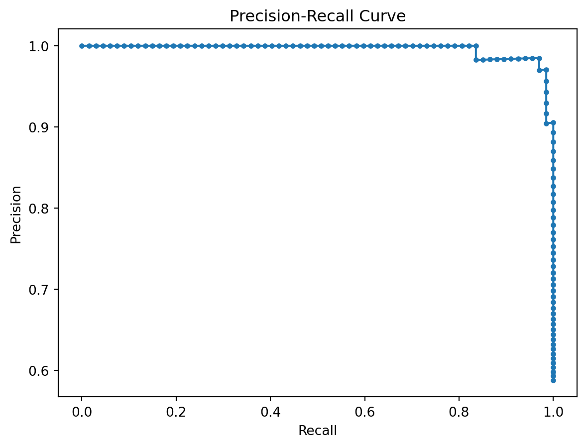
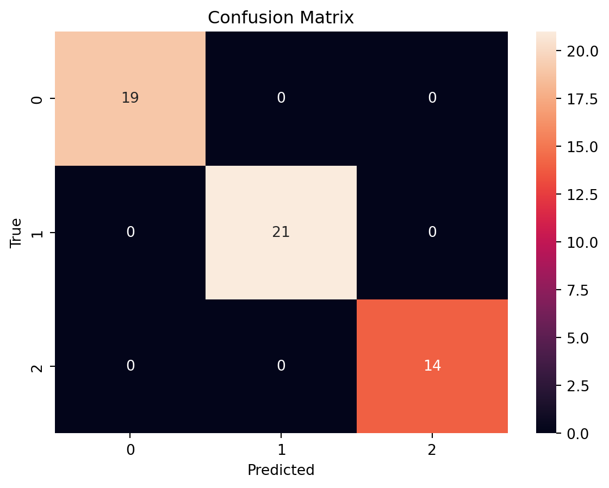

Machine Learning in Classification: ROC, PR, and Confusion Matrix
Classification is a core task in machine learning where the objective is to predict discrete categories or class labels. To evaluate the performance of classification models, several tools are used, including ROC curves, PR curves, and confusion matrices. This blog post delves into these evaluation metrics and demonstrates their use with examples.
ROC (Receiver Operating Characteristic)
Understanding ROC
The ROC curve is a graphical representation of a classification model’s performance. It plots the True Positive Rate (TPR) against the False Positive Rate (FPR) at various threshold settings. The Area Under the Curve (AUC) of the ROC curve is a single value summary of the model performance.
Example: ROC Curve Using Iris Dataset
Code
# Import necessary librariesfrom sklearn import datasetsfrom sklearn.model_selection import train_test_splitfrom sklearn.metrics import roc_curve, aucfrom sklearn.linear_model import LogisticRegressionimport matplotlib.pyplot as plt# Load the Iris datasetiris = datasets.load_iris()X = iris.datay = iris.target# Binary classification problem: Classify Iris-setosa vs othersy = (y ==0).astype(int) # Split the data into training and testing setsX_train, X_test, y_train, y_test = train_test_split(X, y, test_size=0.2, random_state=42)# Train a logistic regression modelmodel = LogisticRegression(solver='lbfgs', max_iter=200)model.fit(X_train, y_train)y_scores = model.predict_proba(X_test)[:, 1]# Compute ROC curve and AUCfpr, tpr, thresholds = roc_curve(y_test, y_scores)roc_auc = auc(fpr, tpr)# Plotting ROC Curveplt.figure()plt.plot(fpr, tpr, color='darkorange', lw=2, label='ROC curve (area = %0.2f)'% roc_auc)plt.plot([0, 1], [0, 1], color='navy', lw=2, linestyle='--')plt.xlabel('False Positive Rate')plt.ylabel('True Positive Rate')plt.title('ROC Curve')plt.legend(loc="lower right")plt.show()

In this example, we use the Iris dataset to perform binary classification (Iris-setosa vs others). We train a logistic regression model and plot the ROC curve, along with calculating the AUC to evaluate the model’s performance.
PR (Precision-Recall)
Understanding PR
The Precision-Recall (PR) curve is another tool for evaluating classifiers, especially useful in imbalanced datasets. It plots precision (positive predictive value) against recall (true positive rate).
Example: PR Curve Using Breast Cancer Dataset
Code
# Import librariesfrom sklearn.datasets import load_breast_cancerfrom sklearn.linear_model import LogisticRegressionfrom sklearn.model_selection import train_test_splitfrom sklearn.metrics import precision_recall_curveimport matplotlib.pyplot as plt# Load the breast cancer datasetdata = load_breast_cancer()X = data.datay = data.target# Splitting the datasetX_train, X_test, y_train, y_test = train_test_split(X, y, test_size=0.2, random_state=0)# Logistic Regression Modelmodel = LogisticRegression(solver='liblinear')model.fit(X_train, y_train)y_scores = model.predict_proba(X_test)[:, 1]# Precision-Recall Curveprecision, recall, thresholds = precision_recall_curve(y_test, y_scores)# Plottingplt.plot(recall, precision, marker='.')plt.xlabel('Recall')plt.ylabel('Precision')plt.title('Precision-Recall Curve')plt.show()

This example uses the Breast Cancer dataset to demonstrate the PR curve. A logistic regression model is trained, and the PR curve is plotted to assess the trade-off between precision and recall for different threshold values.
Confusion Matrix
Understanding Confusion Matrix
A confusion matrix is a table used to evaluate the performance of a classification model. It shows the actual versus predicted classifications and breaks down the results into true positives, true negatives, false positives, and false negatives.
Example: Confusion Matrix Using Wine Dataset
Code
# Import librariesfrom sklearn.datasets import load_winefrom sklearn.ensemble import RandomForestClassifierfrom sklearn.model_selection import train_test_splitfrom sklearn.metrics import confusion_matriximport seaborn as snsimport matplotlib.pyplot as plt# Load wine datasetwine = load_wine()X = wine.datay = wine.target# Splitting the datasetX_train, X_test, y_train, y_test = train_test_split(X, y, test_size=0.3, random_state=42)# Train a Random Forest Classifiermodel = RandomForestClassifier(n_estimators=100)model.fit(X_train, y_train)y_pred = model.predict(X_test)# Generating the confusion matrixcm = confusion_matrix(y_test, y_pred)# Visualizationsns.heatmap(cm, annot=True, fmt="d")plt.xlabel('Predicted')plt.ylabel('True')plt.title('Confusion Matrix')plt.show()

In this example, we use the Wine dataset to demonstrate the confusion matrix. After training a Random Forest Classifier, the confusion matrix is plotted using Seaborn, providing a clear visualization of the model’s performance in terms of correct and incorrect classifications.
Concluding Thoughts
The tools and examples discussed in this blog post provide a comprehensive overview of evaluating classification models in machine learning. The ROC and PR curves offer insights into the model’s performance from different perspectives, particularly useful in varied dataset conditions. The confusion matrix, on the other hand, provides a straightforward, quantifiable measure of a model’s predictive capabilities and errors.
When applied correctly, these tools can greatly assist in understanding the strengths and weaknesses of classification models, guiding data scientists in model selection, tuning, and improvement. As machine learning continues to evolve, the proper evaluation of models remains a cornerstone of developing robust, reliable, and efficient predictive systems.
Remember, the journey in machine learning is as much about understanding and interpreting the models as it is about building them.